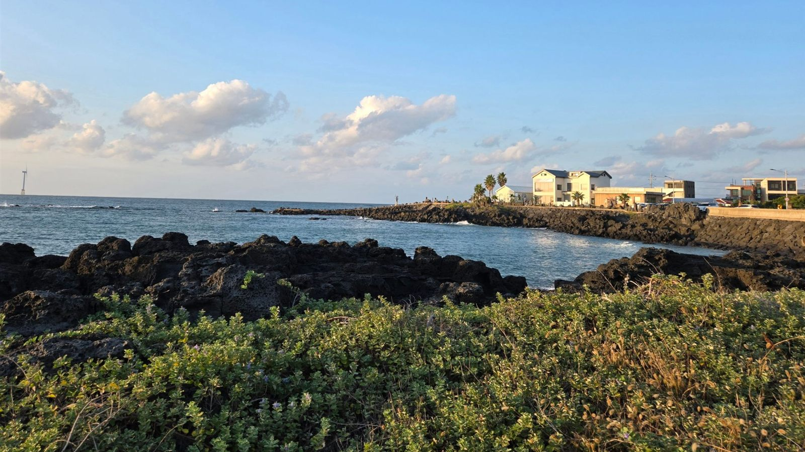
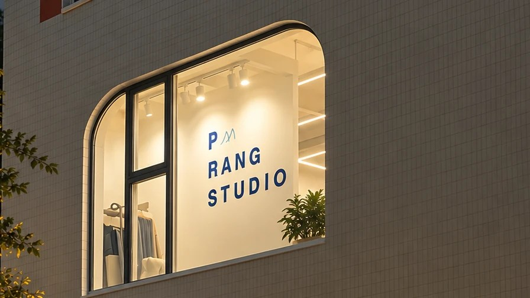
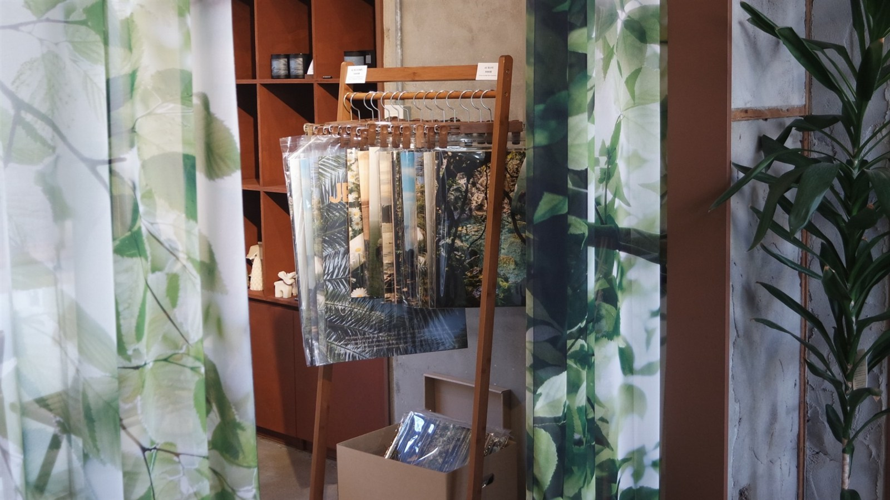
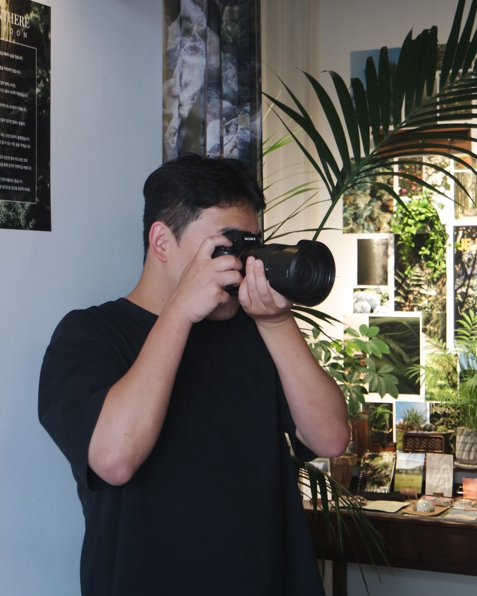
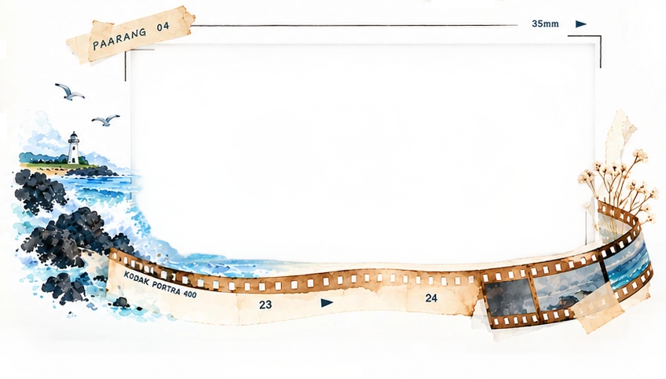

제주로 들어오는 사람과 떠나는 사람들의 흐름은 달라져왔다. 2010년에는 전입한 사람이 전출한 사람보다 437명 많았다. 2015년에는 그 차이가 1만 4천여 명으로 커졌고, 2025년에는 반대로 전출한 사람이 4,273명 더 많았다.
통계 출처: 호남지방통계청 「제주 인구이동 추이」, 국가데이터처 「2025년 연간 제주 지역경제동향」
전입과 전출의 차이만으로는 한 사람이 왜 제주에 왔고, 어떤 시간을 보내며 남아 있는지 알기 어렵다.
제주에 온 지 6년. 임하람 작가도 처음부터 제주살이를 꿈꿨던 사람은 아니다. 회사 생활을 이어가던 당시, 연인과의 이별을 겪으며 그는 “너랑 가장 먼 곳으로 도망가겠다”고 말했다.
그렇게 제주로 향했을 때, 손에 들린 돈은 50만 원이었다.
한 달 뒤, 살아보고 싶은 곳이 되다
처음부터 제주에 정착할 생각은 없었다. 도망치듯 내려온 섬에서 한 달을 지내고 나니 마음이 달라졌다. 이곳에서 살아도 괜찮겠다는 생각이 들었다.

“저라는 존재보다 예쁜 곳이 여기였어요. 이곳에 살면 나도 예뻐질 수 있겠다는 마음이 들었던 것 같아요.”
— 임하람 작가
제주에서 계속 살아보고 싶은 마음이 생겼지만, 생활의 기반을 마련하는 일은 또 다른 과제였다. 당장 방을 구할 돈이 없었던 그는 게스트하우스 매니저로 6개월을 일했다. 숙식을 해결하며 돈을 모았고, 이후 연세로 방을 구했다. 아르바이트를 하며 생활도 이어갔다.
자신의 초기 정착 과정을 돌아보며 그는 준비 기간의 중요성을 이야기한다.
“돈이 없다면 월급을 주는 게스트하우스에서 일하는 것도 좋은 방법이에요. 6개월 정도 준비 기간이면 이후엔 생활하는 데 큰 문제가 없었어요.”
오래 다닐 직장을 찾는 일은 쉽지 않았다. 그는 구직 과정에서 제주로 이주해 온 사람이라는 점이 장벽처럼 느껴지기도 했다고 전했다.
사진관을 열고, 자신의 일을 만들다
생계를 이어갈 방법을 찾는 과정에서 그는 창업을 준비했다. 신사업창업사관학교를 통해 사진관 창업을 준비했고, 이후 강한 소상공인 사업에도 선정되며 자신의 일을 만들어갔다.
처음 문을 연 곳은 아라동의 ‘파랑사진관’이다. ‘파랑’은 물결을 뜻하는 ‘파랑(波浪)’에서 가져왔다. 제주에 작은 물결 하나를 일으켜보자는 의미를 담았다.

사진관에 이어 소품숍 ‘파랑오브레코즈’도 운영하게 됐다. 두 공간에는 무지개의 색을 하나씩 입혔다. 파랑사진관은 파란색, 파랑오브레코즈는 초록색이다. 그의 목표는 일곱 번째 보라색 매장까지 채워 제주에 일곱 빛깔 무지개를 완성하는 것이다.

매장이 하나에서 두 개로 늘면서 일의 부담도 커졌다.
“사업하면서 제일 힘든 건 결국 제 멘탈이에요. 사업 함부로 하지 마십시오. 사업은 하나만 하세요.”
사업의 어려움을 이야기하면서도 제주를 떠날 생각은 없다. 그에게 제주는 자신이 좋아하는 일을 계속해나갈 기회가 있는 곳이다.
사람을 만나고, 내 동네를 알아가는 시간
제주에서 만난 사람들도 그의 정착에 영향을 줬다. 처음에는 무뚝뚝하게 느껴졌던 이들이 가까워진 뒤 세심하게 챙겨주는 모습을 경험했다. 그런 관계 속에서 사람을 대하는 방식도 달라졌다고 한다.
제주를 바라보는 눈도 달라졌다. 처음에는 유명 관광지를 주로 다녔다면, 이제는 자신이 사는 동네와 그 안의 공동체에 관심이 간다.
그는 연동과 용담을 거쳐 지금은 서귀포시 강정동에 2년 넘게 살고 있다. 용담은 해안도로를 따라 달리며 생각을 정리하기 좋은 곳으로 꼽았다. 현재 사는 강정동은 정비가 잘돼 있어 깨끗하고 생활하기 편하다고 했다.
출근길에 힘이 들면 오름이나 한라산 쪽으로 길을 틀어 풍경을 보고 가기도 한다. 일을 하고 집으로 돌아오는 일상 속에도 제주에서 누리는 시간이 있다.

제주에 남은 이유, 사랑
임하람 작가는 처음 제주에 왔을 때와 지금의 차이를 이렇게 말한다.
“처음 온 이유는 살려고 온 거고, 지금은 더 잘 살려고 남아 있는 거예요.”
— 임하람 작가
하루하루를 버텨내던 시간에서, 하고 싶은 일을 이어가는 시간으로 삶의 모습이 달라졌다.
“처음에는 아등바등이었다면, 지금은 뛰고 싶고 날고 싶다는 느낌이에요.”
제주에서의 삶을 이어가는 이유를 한 단어로 묻자, 그는 답했다.
“사랑.”

10개월 된 아이와 가족, 그리고 자신이 좋아하는 일. 그에게 제주는 이제 그것들과 함께 더 나은 삶을 만들어가는 곳이다.
제주 정착을 준비하며 살펴볼 세 가지
1. 초기 생활을 위한 준비 기간
임 작가는 게스트하우스에서 일하며 숙식을 해결하고 돈을 모았다. 그의 경험을 참고하되, 필요한 준비 기간은 자신의 상황에 맞춰 생각해야 한다. 이주 직후 머물 곳과 생활비 마련 방법을 함께 살펴볼 필요가 있다.
2. 하려는 일에 맞는 지원사업
임 작가는 창업 지원 프로그램을 통해 자신의 일을 준비했다. 관심 있는 지원사업과 창업 프로그램을 미리 알아보고, 참여 조건과 준비 과정을 이주 계획에 연결해볼 수 있다.
3. 주거와 이주 일정
제주에는 신구간에 이사하는 풍습이 있다. 이를 참고하되, 실제 매물과 계약 조건을 확인하며 이주 시점을 정하는 편이 좋다. 지원사업 참여를 고려한다면 모집 일정도 함께 살펴야 한다.
출처: 제주관광공사 비짓제주 「민속」
임하람 작가의 제주 동네 3곳
아라동 파랑사진관에서 용담 해안도로, 강정동까지. 섬 안의 사진을 옆으로 넘겨 보세요.



01. 아라동 파랑사진관
제주에 일으킨 작은 물결 하나
임하람 작가가 처음 문을 연 사진관으로, 파란색을 입힌 공간이다. ‘파랑’은 물결을 뜻하는 ‘파랑(波浪)’에서 가져온 이름으로, 제주에 작은 물결 하나를 일으켜보자는 의미를 담았다.
- 발행일
- 인터뷰어
- 황예원
- 인스타그램
- @e_jeju.min